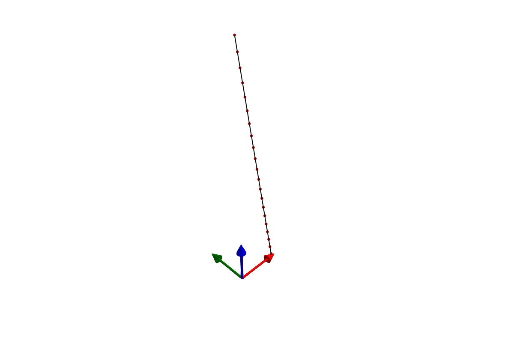
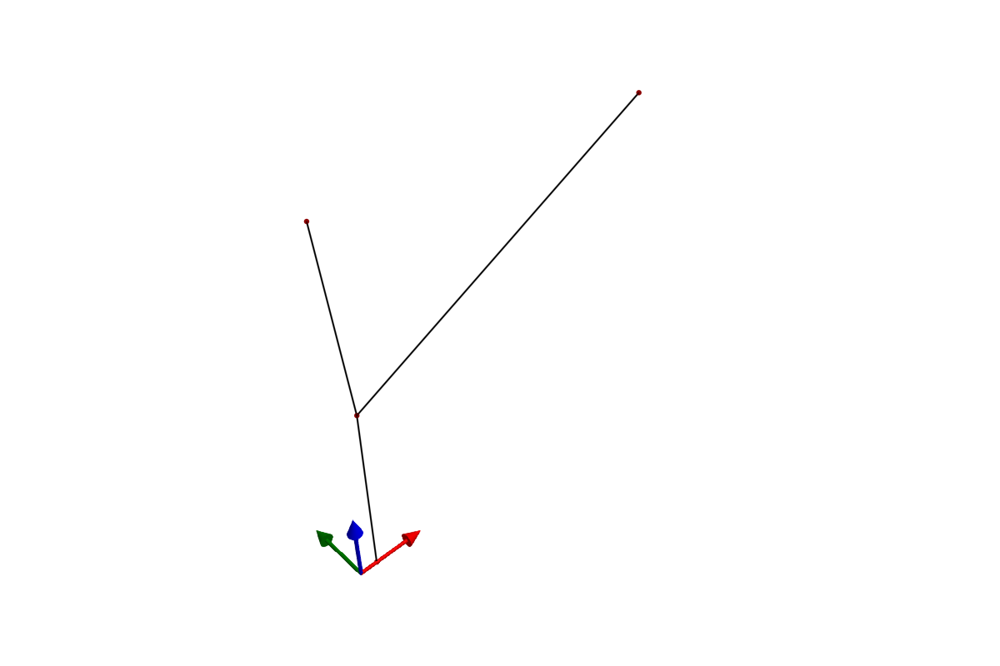
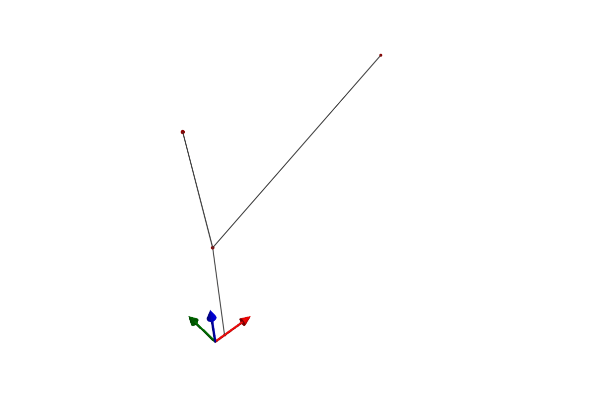

Copyright (c) 2025 Bart van de Lint, Jelle Poland SPDX-License-Identifier: LGPL-3.0-only
Building a system using Julia
This tutorial walks through building mechanical systems from scratch using Julia constructors. Each component is created with a symbolic name and assembled into a SystemStructure, which is then compiled into a simulation model.
Overview
The construction workflow has four steps:
- Define components — create
Point,Segment,Transform, and optionallyTether,Winch,Pulley - Assemble — pass components to
SystemStructure, which resolves all symbolic references (:anchor→ index 1) and validates the structure - Compile — wrap in
SymbolicAWEModel, which generates symbolic equations via ModelingToolkit and compiles anODEProblem - Simulate — call
init!andnext_step!
All components use symbolic names (:anchor, :spring, etc.) and reference each other by name. The SystemStructure constructor resolves these references to numeric indices automatically. Integer indices are also supported for backwards compatibility.
Step 1: a simple tether
We start with the simplest possible system: a chain of point masses connected by spring-damper segments, hanging under gravity.
using SymbolicAWEModels, VortexStepMethod
using GLMakie
using MakieControlPlots
set = Settings("system.yaml")
set.solver = "FBDF"
set.v_wind = 1.0
n_segments = 20
l_tether = 50.0First, define the points. The anchor is STATIC (fixed in space). The intermediate points are DYNAMIC (governed by Newton's second law). The tip point has some extra mass.
points = Point[]
push!(points, Point(:anchor, zeros(3), STATIC; transform=:tf))
for i in 1:n_segments
pos = [0.0, 0.0, i * l_tether / n_segments]
if i < n_segments
push!(points, Point(Symbol("p_$i"), pos, DYNAMIC;
transform=:tf))
else
push!(points, Point(:tip, pos, DYNAMIC;
extra_mass=1.0, transform=:tf))
end
endThree of the four DynamicsTypes apply to a point:
STATIC— the point is welded in the world frameDYNAMIC— the point moves according to $\ddot{\mathbf{r}} = \mathbf{F}/m$BODY_STATIC— the point rides aBody(or a beam element) rigidly and feeds its net force into that body
The fourth, KINEMATIC, applies to a TwistSurface whose deflection is prescribed by geometry, not to a point.
Next, connect the points with Segments. Each segment is a spring-damper element with explicit stiffness and damping per unit length.
unit_stiffness = 614600.0 # [N]
unit_damping = 473.0 # [Ns]
diameter = 0.002 # [m]
segments = Segment[]
for i in 1:n_segments
p_i = points[i].name
p_j = points[i+1].name
push!(segments,
Segment(Symbol("seg_$i"), p_i, p_j,
unit_stiffness, unit_damping, diameter))
endA Transform describes the initial orientation of the system using spherical coordinates (elevation, azimuth, heading) relative to a base position.
transforms = [Transform(:tf, deg2rad(-80), 0.0, 0.0;
base_pos=[0.0, 0.0, 50.0],
base_point=:anchor, rot_point=:tip)]Now assemble everything into a SystemStructure and visualize it:
sys_struct = SystemStructure("tether", set;
points, segments, transforms)
GLMakie.plot(sys_struct)

If the system looks correct, compile and simulate:
using KiteUtils: init!, next_step!, update_sys_state!
sam = SymbolicAWEModel(set, sys_struct)
init!(sam)
logger = Logger(sam, 201)
sys_state = SysState(sam)
log!(logger, sys_state)
for i in 1:200
next_step!(sam)
update_sys_state!(sys_state, sam)
log!(logger, sys_state)
end
save_log(logger, "tether_sim")
lg = load_log("tether_sim")
SymbolicAWEModels.record(lg, sam.sys_struct, "tether_sim.gif")Step 2: adding a winch
To control tether length, we group the segments into a Tether and connect it to a Winch. The winch applies a torque to reel the tether in or out.
# Group all segments into a tether. The points already sit at the
# right spacing, so the tether takes its length from that geometry;
# pass a stretched standoff only to reposition a root tether.
seg_names = [s.name for s in segments]
tethers = [Tether(:main, seg_names)]
# Create a winch connected to the tether
gear_ratio = 1.0
drum_radius = 0.11 # [m]
f_coulomb = 122.0 # [N]
c_vf = 30.6 # [Ns/m]
inertia_total = 0.024 # [kgm²]
winches = [Winch(:winch, [:main],
gear_ratio, drum_radius, f_coulomb, c_vf, inertia_total;
winch_point=:anchor)]Build and simulate with a constant torque of -20 Nm:
sys_struct = SystemStructure("winch", set;
points, segments, tethers, winches, transforms)

using KiteUtils: init!, next_step!, update_sys_state!
sam = SymbolicAWEModel(set, sys_struct)
init!(sam)
logger = Logger(sam, 201)
sys_state = SysState(sam)
log!(logger, sys_state)
for i in 1:200
next_step!(sam; set_values=[-20.0])
update_sys_state!(sys_state, sam)
log!(logger, sys_state)
end
save_log(logger, "winch_sim")
lg = load_log("winch_sim")
SymbolicAWEModels.record(lg, sam.sys_struct, "winch_sim.gif")Step 3: adding a pulley
A Pulley enforces length redistribution between two segments that share a common point. This models a physical pulley where the total rope length through the pulley is conserved.
set = Settings("system.yaml")
set.solver = "FBDF"
set.v_wind = 1.0
set.abs_tol = 1e-4
set.rel_tol = 1e-4Create points — two static anchor points, and two dynamic points forming the pulley system:
points = [
Point(:left, [0.0, 0.0, 2.0], STATIC),
Point(:right, [2.0, 0.0, 2.0], STATIC),
Point(:pulley, [0.1, 0.0, 1.0], DYNAMIC),
Point(:weight, [0.1, 0.0, 0.0], DYNAMIC; extra_mass=0.1),
]
segments = [
Segment(:to_left, :pulley, :left,
unit_stiffness, unit_damping, diameter),
Segment(:to_right, :pulley, :right,
unit_stiffness, unit_damping, diameter),
Segment(:hanging, :pulley, :weight,
unit_stiffness, unit_damping, diameter),
]The pulley connects the two upper segments. When one gets shorter, the other gets longer by the same amount:
pulleys = [Pulley(:pulley, :to_left, :to_right, DYNAMIC)]Orient the system and build:
transforms = [Transform(:tf, deg2rad(0.0), 0.0, 0.0;
base_pos=[1.0, 0.0, 4.0],
base_point=:left, rot_point=:right)]
sys_struct = SystemStructure("pulley", set;
points, segments, pulleys, transforms)

using KiteUtils: init!, next_step!, update_sys_state!
sam = SymbolicAWEModel(set, sys_struct)
init!(sam)
logger = Logger(sam, 201)
sys_state = SysState(sam)
log!(logger, sys_state)
for i in 1:200
next_step!(sam)
update_sys_state!(sys_state, sam)
log!(logger, sys_state)
end
save_log(logger, "pulley_sim")
lg = load_log("pulley_sim")
SymbolicAWEModels.record(lg, sam.sys_struct, "pulley_sim.gif")
Step 4: wings
Wings can be added via Julia constructors or YAML — both paths produce the same SystemStructure. See the 2-Plate Kite example for a complete wing system, and VSM Coupling for how aerodynamic forces are computed.
Named references
All component constructors accept symbolic names (:anchor, :spring) or integer indices (1, 2). Components reference each other by name:
## Segment references points by name
Segment(:spring, :anchor, :mass, 1000.0, 50.0, 0.002)
## Tether references segments by name
Tether(:main, [:seg1, :seg2])
## Winch references tethers and winch point by name
Winch(:winch, [:main], 1.0, 0.11, 122.0, 30.6, 0.024;
winch_point=:anchor)
## Pulley references segments by name
Pulley(:pulley, :seg_a, :seg_b, DYNAMIC)
## Transform references points by name
Transform(:tf, 0.5, 0.0, 0.0; base_point=:anchor,
rot_point=:tip, base_pos=[0, 0, 50])The SystemStructure constructor resolves all names to indices. After construction, you can access components by name:
sys.points[:anchor] # Access point by name
sys.segments[:spring] # Access segment by name
sys.winches[:winch] # Access winch by nameComponent summary
| Type | Constructor | Purpose |
|---|---|---|
Point | Point(name, pos, type; ...) | Mass node |
Segment | Segment(name, p_i, p_j, k, c, d; ...) | Spring-damper |
Tether | Tether(name, segments; ...) | Winch-controlled segments |
Winch | Winch(name, tethers, n, r, Fc, cv, I; ...) | Torque-controlled motor |
Pulley | Pulley(name, seg_i, seg_j, type) | Equal-tension constraint |
TwistSurface | TwistSurface(name, points, type, frac; ...) | Wing twist section |
Body | Body(name; mass, inertia_principal, pos) | Rigid body |
ElasticJoint | ElasticJoint(name, body_a, body_b; ...) | Lumped 6-DOF spring between bodies |
TimoshenkoJoint | TimoshenkoJoint(name, body_a, body_b; ...) | Beam element between bodies |
Transform | Transform(name, el, az, hdg; ...) | Spherical positioning |
See the Types page for full constructor documentation.
This page was generated using Literate.jl.